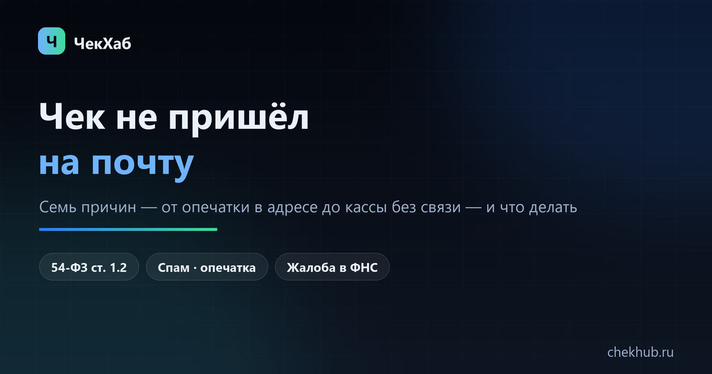

Электронный чек не пришёл на почту: 7 причин и что делать
Деньги списали, чек пробит — а письма нет. В большинстве случаев документ существует: он просто не дошёл до ящика. Ниже — как за пару минут понять, на каком звене потерялся чек, и что делать, если его действительно не пробили.

Электронный чек — это не «письмо от магазина», а фискальный документ. Он существует с момента, когда касса его зарегистрировала, — даже если до вашей почты письмо не дошло.
Если разбираться некогда
от 1 500 ₽ за кассу за месяц; год и сеть считаем по количеству касс и месяцев. Срок 1–3 рабочих дня на небольшую сеть.
Гарантия: если ваш ОФД не отдаёт данные за нужный период — вернём предоплату.
Как выглядит результат: пример файла выгрузки (CSV, данные тестовые).
Коротко: чек не теряется, он идёт по четырём звеньям
Между оплатой и письмом в вашем ящике стоят четыре звена, и письмо пропадает, когда ломается любое из них:
- касса — печатает чек и записывает его в фискальный накопитель;
- фискальный накопитель — хранит документ и передаёт его оператору;
- ОФД — принимает чек и рассылает электронные копии покупателям;
- почта — доставляет письмо до ящика или выбрасывает его в спам.
Поэтому первый вопрос не «куда пропал чек», а «на каком звене он застрял». Ответ обычно виден за пару минут: чек либо есть в базе ФНС (значит, пробит и потерялся только на доставке), либо его нет нигде (значит, его не пробили).
И ещё одно, о чём забывают: по пункту 2 статьи 1.2 закона 54-ФЗ электронная копия направляется только тем, кто до момента расчёта дал номер телефона или адрес электронной почты. Не давали адрес — магазин ничего не нарушил, бумажного чека достаточно. Зато чек, полученный по почте, равнозначен бумажному: ссылаться на «у меня только электронный» бессмысленно — и требование «пришлите ещё и бумажный» тоже не работает.
Семь причин, почему чек не пришёл на почту
| Причина | Как проверить | Что делать |
|---|---|---|
| 1. Адрес не указали. На кассе не спросили почту, кассир пропустил поле или записал «нет» | Посмотреть бумажный чек: адрес или телефон покупателя печатается в реквизитах, если его вводили | Взять бумажный чек или попросить копию у магазина |
| 2. Опечатка в адресе. Лишняя точка, перепутанные буквы, «gmail.com» вместо «gmail.ru» | Сравнить адрес в чеке со своим — посимвольно, а не «на глаз» | Попросить магазин отправить копию на верный адрес: документ у него есть в кабинете ОФД |
| 3. Письмо в спаме или в рассылках. Адреса ОФД часто попадают в фильтры, особенно в корпоративной почте | Поиск по словам «кассовый чек», «ОФД», по сумме покупки; проверить папки «Спам», «Рассылки», «Архив» | Найти письмо и добавить отправителя в контакты, чтобы следующие чеки доходили |
| 4. Чек ушёл на телефон. На кассе дали номер, а не почту — закон разрешает оба варианта | Вспомнить, что именно диктовали на кассе; проверить SMS со ссылкой на чек | Открыть ссылку из SMS и сохранить чек в PDF |
| 5. Касса была без связи. Чек записан в накопитель, но до ОФД ещё не дошёл — значит, и рассылки не было | Проверить чек по реквизитам в приложении ФНС: документ там есть, а письма нет | Подождать: отправка произойдёт после того, как касса передаст чек оператору |
| 6. Покупка через маркетплейс или агента. Чек формирует другая организация, письмо приходит от неё, а не от магазина | Искать письма от маркетплейса и в личном кабинете заказа, а не только от продавца | Взять чек в личном кабинете заказа или запросить у поддержки |
| 7. Ящик не принимает почту. Переполнен, старый корпоративный адрес, жёсткий антиспам | Заглянуть в ящик через веб-версию, а не только в приложении; проверить, не заблокирован ли он | Указать при следующей покупке другой адрес или попросить копию |
Семь причин сводятся к одной мысли: сначала проверяем, существует ли чек, и только потом выясняем, почему он не дошёл. Порядок действий — ниже.
Восьмая причина, которую магазины не любят обсуждать
Бывает, что чека нет ни в почте, ни в базе ФНС. Тогда речь не о доставке: расчёт просто не провели через кассу. Это уже нарушение, а не техническая накладка. Проверяется элементарно: сумма и дата есть в выписке банка, а в базе налоговой по этой кассе документа нет.
Признаки, что дело именно в этом: магазин предлагает «чек попозже», присылает свой товарный чек или скриншот вместо кассового, отказывается называть номер фискального накопителя. Дальше — обращение в налоговую, о нём в разделе «Что делать покупателю».
Что делать покупателю: порядок действий
- Проверить чек по реквизитам в ФНС. Приложение «Проверка чека» и сервис на сайте налоговой принимают QR-код с бумажного чека или три числа вручную: номер фискального накопителя (ФН), номер фискального документа (ФД) и фискальный признак документа (ФПД). Что означают эти реквизиты и что делать, если проверка пишет «чек не найден», разобрано в статье «Проверить чек по QR-коду».
- Поискать письмо в почте правильно. Ищите не по названию магазина, а по словам «кассовый чек», «электронный чек», «ОФД» и по сумме покупки. Проверьте папки «Спам», «Рассылки», «Промоакции» и архив — в корпоративной почте чек часто отсекается до «Входящих».
- Попросить копию у продавца. Документ у магазина есть: он хранится в кабинете ОФД. Нормальная просьба звучит так: «Пришлите, пожалуйста, кассовый чек за покупку от такой-то даты на такой-то адрес — чек не пришёл». Если чек отправляли на телефон, попросите ссылку.
- Если чека нет и в ФНС — обращение в налоговую. Сервис «Обратиться в ФНС России» на сайте налоговой; в обращении: дата и время покупки, адрес точки, сумма, что купили, номер кассы или ФН, если он есть, и фото бумажного чека либо экран заказа. Неисполнение обязанности по выдаче или направлению чека — часть 4 статьи 14.5 КоАП: предупреждение или штраф 1 500–3 000 ₽ для должностных лиц и ИП, 5 000–10 000 ₽ для юридических лиц. Срок давности по таким нарушениям — год (статья 4.5 КоАП), поэтому тянуть не стоит.
- Закрепить доказательство покупки. Даже без чека покупку подтверждают выписка по карте с датой, временем и суммой, письмо о заказе, гарантийный талон, запись в личном кабинете магазина. Для возврата или гарантии этого обычно достаточно: отсутствие чека не лишает покупателя прав, но доказать покупку придётся именно этими документами.
Что делать продавцу, чтобы чеки доходили
Если жалобы «чек не пришёл» повторяются, дело почти всегда в процессе на кассе, а не в операторе. Проверять стоит по порядку:
- спрашивать адрес всегда и диктовать его обратно покупателю перед завершением расчёта — одна перепутанная буква делает доставку невозможной;
- не подставлять «свой» адрес вместо покупательского: чек уйдёт в бухгалтерию магазина, а покупатель останется без документа;
- смотреть статусы доставки в кабинете ОФД: у большинства операторов видно «доставлено» и «ошибка доставки» — это единственный способ узнать о проблеме раньше покупателя;
- отправлять повторно, когда просят: это минута работы в кабинете, а спор о возврате без чека может стоить дороже;
- всегда выдавать бумажный чек, если покупатель его просит: электронная копия не отменяет обязанности выдать документ на бумаге;
- держать почту отправителя в порядке: если письма ОФД массово падают в спам у клиентов, помогает обращение к оператору — он меняет адрес отправки и настраивает подпись домена.
Отдельная история — чеки, которые так и не были пробиты. Их задним числом «досылают» не письмом, а чеком коррекции с кассы; как он формируется и какие реквизиты обязательны, разобрано в статье «Чек коррекции в ОФД».
Если нужны все чеки за период, а не отдельное письмо
Покупателю хватает одного письма. Бухгалтеру, ИП и владельцу сети нужен реестр за период: все чеки по всем кассам, с суммами, НДС и признаками расчёта. Почтовый ящик для этого не годится: письма теряются, часть чеков уходила на телефон, часть — на старые адреса сотрудников. Полный источник один — кабинет ОФД, но и он отдаёт данные порциями: период ограничен, строки обрезаются, выгрузка идёт по месяцам и потом склеивается по ключу ФН + ФД + ФПД.
Что важно проверить в готовом реестре:
- нет дублей — один и тот же чек не должен попасть дважды при склейке месяцев;
- есть возвраты и коррекции — они идут отдельными строками со своими признаками расчёта, и если фильтровать только приходы, выручка «вырастет»;
- сумма сходится с банком — первый признак, что период закрыт полностью.
Если разбираться с кабинетами и склейкой нет времени, реестр собирают под ключ: см. услугу выгрузки чеков из ОФД — Excel или CSV с реквизитами и позициями, от 1 500 ₽ за кассу за месяц, срок 1–3 рабочих дня. Как выглядит файл, видно на примере выгрузки.
Частые ошибки в разборе «чек не пришёл»
| Так думают | Как на самом деле |
|---|---|
| «Раз письма нет, значит чек не пробили» | Чаще наоборот: чек пробит и есть в базе ФНС, а письмо отсек почтовый фильтр. Проверка по ФД и ФН занимает минуту |
| «Бумажный чек не дали, зато прислали на почту — этого достаточно» | Достаточно: электронный чек равнозначен бумажному. Но по требованию покупателя бумажный всё равно обязаны выдать |
| «Адрес не спрашивали — значит магазин обязан был прислать чек на почту» | Обязанность возникает, только если покупатель сам дал адрес или телефон до момента расчёта. Без этого хватает бумажного чека |
| «Чек от маркетплейса — не настоящий» | Настоящий: его формирует организация, которая проводит расчёт. Проверяется по ФД и ФН так же, как любой другой |
| «Письмо удалил — чек пропал» | Документ хранится у ОФД 5 лет, но доступ к кабинету и старой почте может закрыться раньше. Нужные чеки лучше сохранять в PDF сразу |
Соседние разборы по теме: где найти электронный чек — четыре места, включая приложение ФНС, и сколько чеки хранятся в ОФД, если письмо нужно найти спустя годы.
Частые вопросы
Через сколько времени приходит чек на почту?
Обычно в течение нескольких минут после расчёта. Если касса работала без связи, чек сначала попадёт в фискальный накопитель и уйдёт оператору позже — тогда письмо придёт после восстановления связи, иногда на следующий день.
Я указал почту с ошибкой. Чек можно получить?
Да. Чек уже пробит и хранится в базе ФНС и у оператора: найдите его в приложении «Проверка чека» по QR-коду, номеру ФД и ФН либо попросите магазин отправить копию на верный адрес — в кабинете ОФД это делается за минуту.
Обязан ли магазин присылать чек на почту?
Да, если покупатель до момента расчёта дал адрес электронной почты или номер телефона — так требует пункт 2 статьи 1.2 закона 54-ФЗ. Если контакты не предоставляли, магазин обязан выдать чек на бумаге, и электронного может не быть.
Магазин говорит, что чеки на почту не отправляет. Это законно?
Нет, если адрес вы предоставили до оплаты. В этом случае чек должны направить в электронной форме, а по просьбе покупателя — выдать и на бумаге. Отказ стоит обжаловать обращением в налоговую.
Электронный чек на почте равен бумажному?
Да, чек в электронной форме равнозначен чеку на бумажном носителе (пункт 2 статьи 1.2 закона 54-ФЗ). С ним принимают возвраты, гарантийные обращения и подтверждение расходов.
Куда жаловаться, если чек не пришёл и в базе ФНС его нет?
В налоговую: сервис «Обратиться в ФНС России» на сайте службы. Укажите дату, время, адрес точки, сумму и, если есть, номер кассы или ФН. Невыдача чека — часть 4 статьи 14.5 КоАП: предупреждение или штраф от 1 500 до 10 000 ₽.
Нужно ли хранить электронные чеки самому?
Желательно. Оператор и продавец хранят документы 5 лет, но доступ к почтовому ящику и кабинету ОФД может закрыться раньше — например, при смене работы или блокировке адреса. Для гарантии и вычетов сохраняйте чек в PDF.
Может ли оператор прислать чек повторно, если магазин не отвечает?
У большинства ОФД есть поиск чека по реквизитам и повторная отправка, но работает это, как правило, через магазин: покупателю достаточно попросить копию у продавца, ссылаясь на дату и сумму покупки.